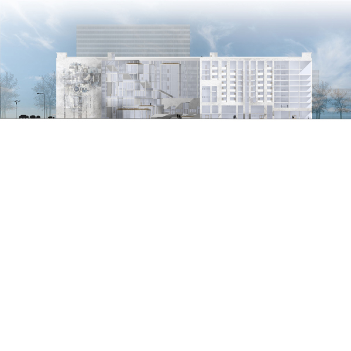
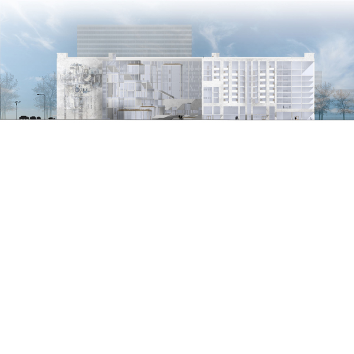
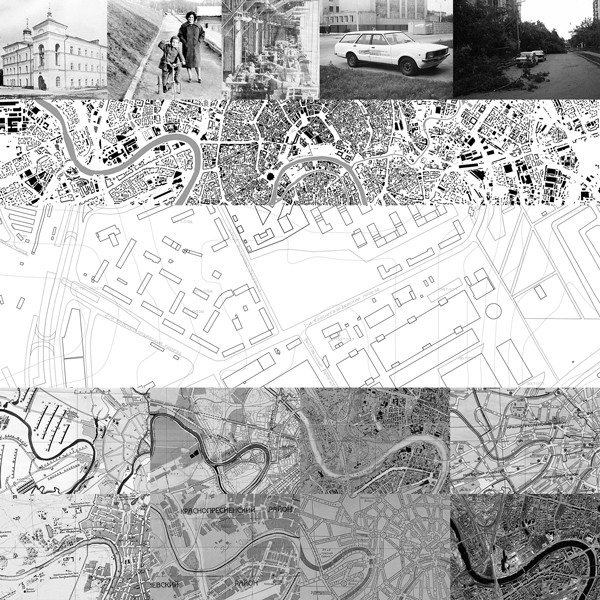
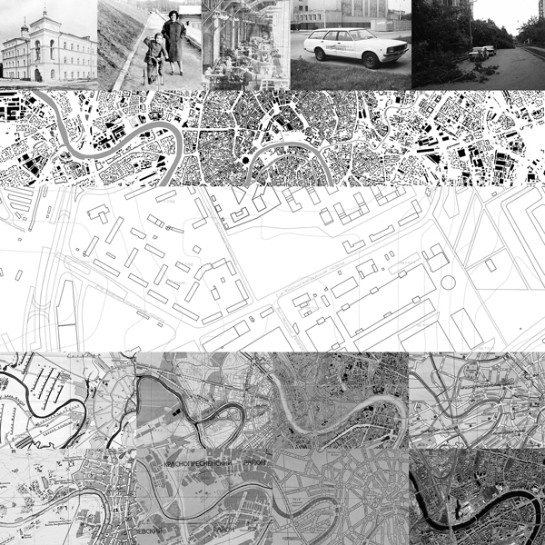
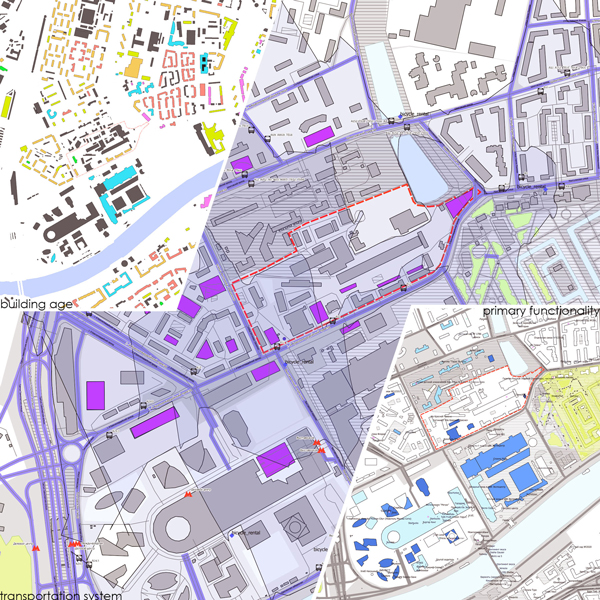
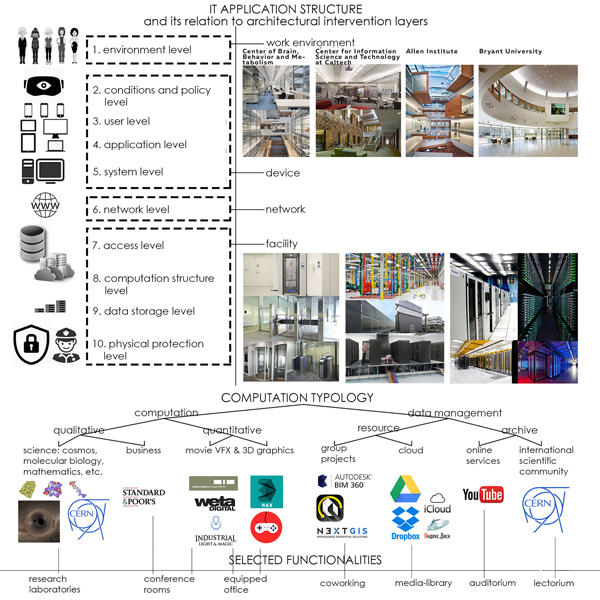
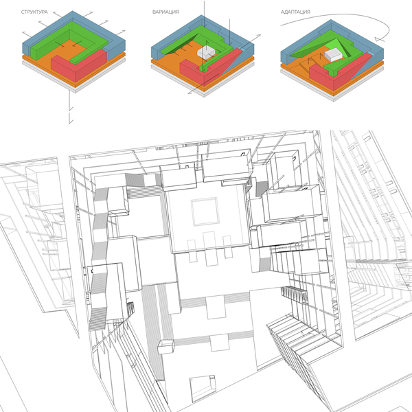
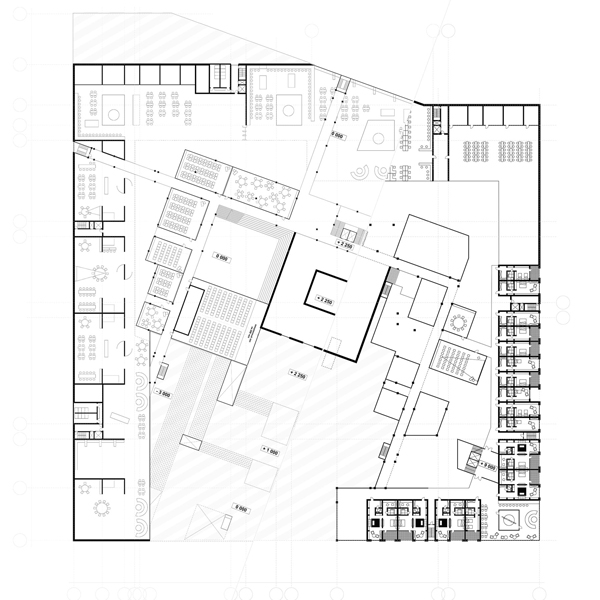
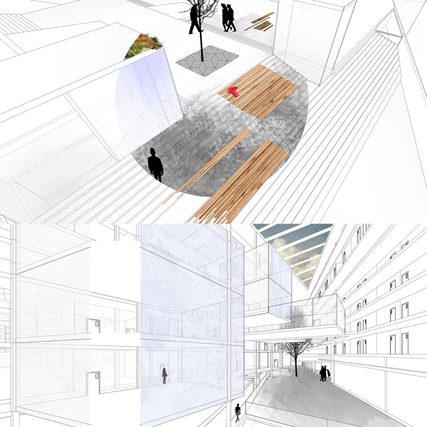
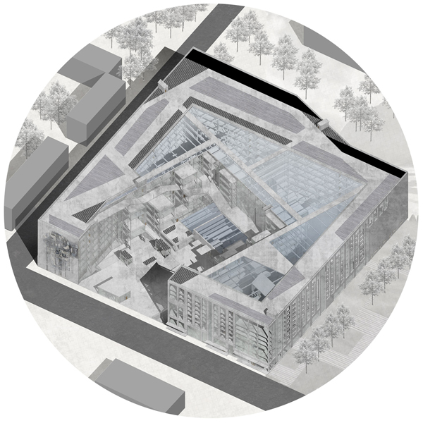

thesis
project
of multi-
functional
data-
center
бакалаврский
проект
много-
функционального
дата-
центра
 


This project was executed during last 5 month of bachelor studies as a thesis project. General approach followed by the curriculum is to task students in making large-scale complex that equivocally includes separate functions. Students get to choose the location and the role the project has to be grounded by site research.
Task
 
My general interest laid in direction of IT related functionality so the site of the most relevance became clear quickly - outdated expo/data center next to new CBD in Moscow - Moscow City. Being relatively clear the site presented challenges as it existed on the outskirts of a strong city module and lay in-between major areas of city infrastructure. Moreover, functionally the area grew to be extremely divided so the object had to address the issue as well.
Site
Thus digging further in, the place was on the side of the gate-road to the city for a long time and it remained unplanned until 1930s. The area now though is accessible by basically all means of transport including even river-trams. Additionally the area remained low to middle height of edification until the Moscow City Complex was erected out of context. These properties present reach pool of potential and interesting limitations to work in.
Background
Having geographical proximity to one of the city's internet entry points the object ought to capitalize on that through extensive data-centre functionality. Accessibility and rapid residential development meant inclusion of educational programs to shorten the gap of intellectual specialist needed for IT activities of the area. With the business playing major attracting role in area development the center had to include various workspace activities as well. Cleared area included hotel functionality which had to be compensated either.
Function
Volume
Regulation-wise the challenge was in maintaining functional purity and balance with security and emergency practices. This was resolved by interlinking two modular axis grids creating dynamic carcass solution partly punctured and partly linked by vertical infrastructure and communications.
Prints
Multilayered environment resulted in a curious spatial configuration intriguing with its unpredictability but rigid in its order. Moreover, the common halls and areas between business and education in such a space would encourage potential interaction and experience exchange.
Interior
Externally The building responded most directly to the functional filling. The ordered and systematic business front is simple and planar sheltering the building from surrounding overly high sound pollution, public yard opens to the classrooms and auditoria thus is more granular and fully transparent and open inside.
Exterior
Этот выпускной проект был выполнен в последний семестр учёбы на бакалавриате. В общих чертах подход следовал программе: студенты проектируют крупномасштабный многофункциональный комплекс, где разные функции выражены в равной степени. Место и функция комплекса выбирается студентом, но должно быть хорошо обосновано.
Задача
Общая роль, которую мне хотелось адресовать стали IT, так что в Москве участок стал быстро очевиден - устаревший экспо-/дата-центр при бизнес-центре Москва-Сити. Несмотря на сравнительную пустоту участка, он представлял определённые сложности. Так, он находится на границе крупного и обособленного городского модуля, и должен каким-то образом включиться в среду. Функциональное наполнение района сильно разобщено и объект должен каким-то образом адресовать проблему. Более того, участок зажат между крупными инфраструктурными венами города, с сопутствующим шумовым и прочим загрязнением.
Участок
Так углубляясь в историю и устройство участка, оказалось, что он находился рядом с крупной входной зоной участка и таким образом оставался хаотичным до 1930ых. С другой стороны, сейчас участок доступен посредством практически всех видов транспорта, включая даже водный трамвай. Более того, до возведения нового, во многом вырванного из контекста комплекса Москва-Сити застройка сохранялась малой и средней этажности. Эти условия формировали богатый потенциал для проектирования, при этом создавая интересные ограничения.
Контекст
Будучи в прямой географической доступности к крупному узлу доступа сети интернет в город, объект должен капитализировать на этом посредством вмещения дата центра. Доступность к быстро развивающейся жилой застройки вокруг комплекса, означала общественные и образовательные функции, способствующие повышению IT образованности населения. А для насыщенной бизнес среды, центр должен создать рабочее пространство входного уровня, привлекая малый бизнес. Помимо этого, центр должен компенсировать отель, находящийся на территории под снос.
Функция
Каждая из этих четырёх функций подразумевает контрастную пространственную структуру. Например, сервера не требуют естественного освещения и нуждаются в максимальном охлаждении в любое время года. Отель же наоборот нуждается в максимальной открытости и в наличии наиболее перспективных видов на город. Эта перемешанная смесь задач была решена посредством полуоткрытого внутреннего двора. Бизнес и отельные функции были отодвинуты на внешнее кольцо, а общественные и учебные - формировали внутренний двор, разделяясь сбивкой этажей. Сервера дата-центра же задвигались под сам двор.
Объём
С точки зрения пожарной и общей безопасности в здании нужно было соблюсти функциональную обособленность и интуитивную доступность. Чтобы решить это были введены две гибкие модульные решётки осей, перфорированные и одновременно объединённые вертикальными коммуникациями и конструкциями.
Чертежи
Многослойная конфигурация пространства создала интригующий эффект сочетая непредсказуемость и организованность. Более того, общие пространства холла между бизнес и общественными блоками стали бы катализатором развития и инноваций.
Интерьер
Внешне здание наиболее буквально отвечает внутреннему наполнению. Снаружи здание защищает от внешнего шума простым и плоскостным фасадом, тогда как со двора общественные задачи, будучи более гибкими и динамичными открывается дроблёнными и в тоже время, прозрачными модулями лекционных помещений, создавая доступный с улицы каскад вокруг двора.
Экстерьер